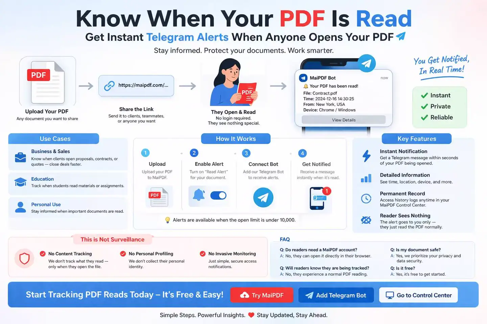

Tracking
Get a Telegram message the moment someone opens your PDF reading link — ideal when you simply need to know “was it opened?”
Updated: April 13, 2026
Knowledge base
What this feature does
Read Alerts lets you receive a Telegram notification when someone opens your PDF link.
Before you start
To use Read Alerts, the access limit must be below 10,000. If the access limit is too high, this feature cannot be enabled.

How to set it up
Set the access limit to below 10,000.
Click Add Bot to connect your Telegram account.
After it succeeds, you’ll get a confirmation message in Telegram and MaiPDF will show your chat ID on the page.
The chat ID is used for future read alerts.
What happens next
4. Create the PDF page
After the page is created, MaiPDF will provide the reading link and the modification code. You can save the modification code in case you want to replace the file later.
5. Share the reading link
Send the reading link to your recipient.
6. Receive read alerts
When someone opens the PDF link, MaiPDF will automatically send a read alert to your connected Telegram chat.
Full flow
In short
Connect Telegram once, then MaiPDF will automatically send a Telegram alert whenever someone opens your PDF link.
Next step: start from maipdf.com, set access limit, bind Telegram, and share your reading link.
Enable Read Alerts and get Telegram notifications for proposals, contracts, and documents that matter.